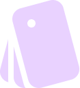
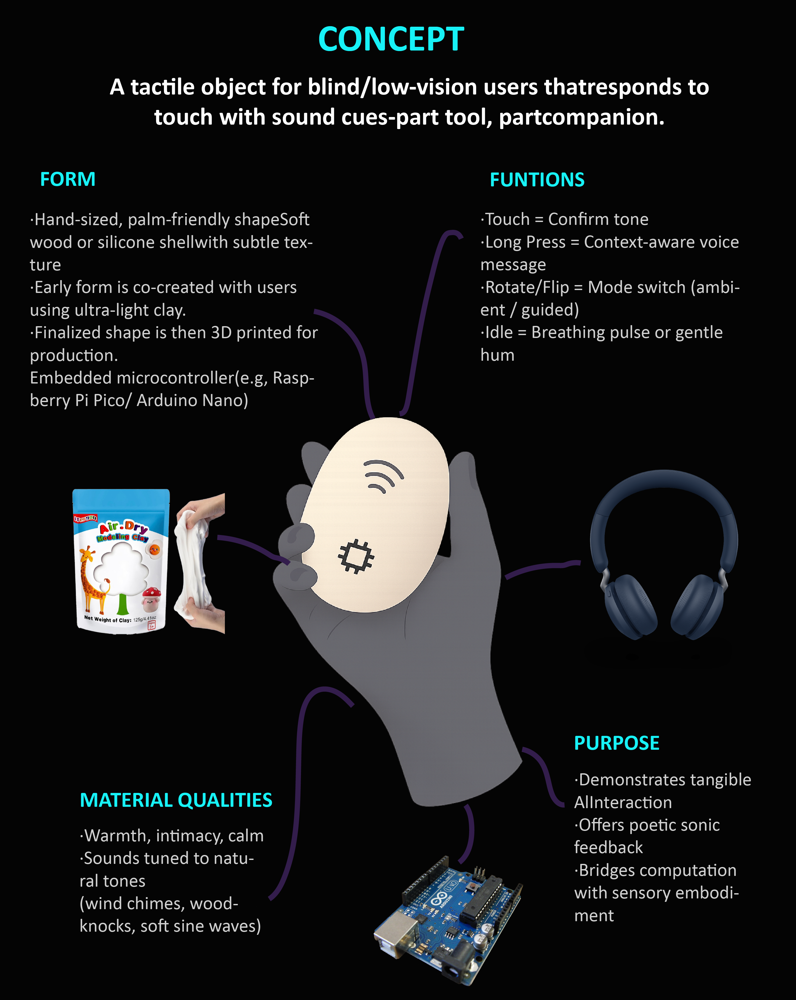

- How can AI-powered interfaces better serve blind users by using sound as the primary communication mode?
- In what ways can sonic feedback replace or enhance visual UI to support independence, accessibility, and emotional well-being?
Research Questions

Keywords and Intersecting Fields

Historical Lineage

Community of Practice Network
Situated Technology
- Anti-solutionism: treat uncertainty as a design material. Don't make “opening the black box” the end goal. Instead, render uncertainty audible and controllable in the sound UI (confidence earcons, adjustable speech rate/granularity, and re-say strategies). Use norms and governance to constrain the system rather than only chasing higher accuracy; the question isn't “full explanation,” but what kind of technology we choose to live with.
- Turn home/wearables from surveillance entry points into controlled boundaries. Responding to smart-home critiques that people are turned into predicted/shaped objects, prioritize on-device inference, explicit switches, and visible data-egress indicators. Default to not always listening (no always-on hotword), and allow one-tap export/deletion of local acoustic logs—so the home doesn't become a capitalized sensor.
Methods

Computational Design Experiments

Visual Representation
Inspiration: Influenced by sonic minimalism, tactile metaphors, and designers like Yuri Suzuki.
Sensory Aesthetics: Aesthetics here explore sound through visuals and touch—not just to see, but to feel and hear.

Style: Uses flowcharts, icons, and object sketches. Dark backgrounds and soft gradients enhance accessibility.
Materials: Ultra-light clay and silicone model shapes with users—warm, soft, and calm.
Community: Aligns with accessibility and sound-design communities, challenging screen-first norms.
Rhetorical Arguments
Brief Outline of a Potential Capstone Project

The Challenges
Building a believable, non-intrusive AI persona
Drawing Type + Printing Plan

Sound-Reactive Interface Object
